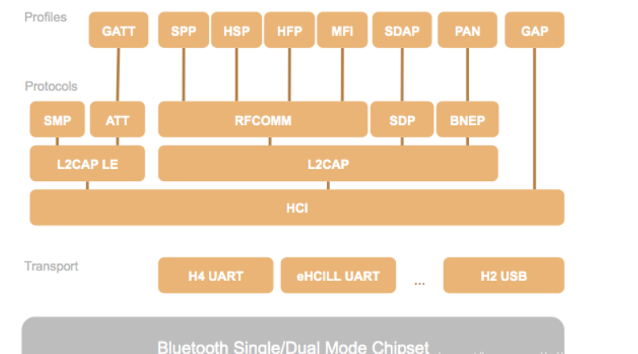
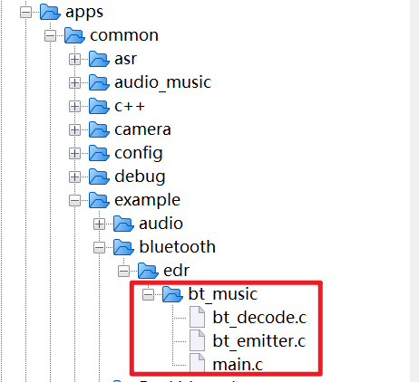
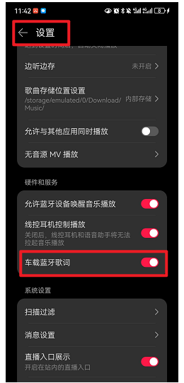
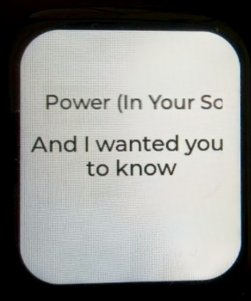

<!DOCTYPE lake>
<p data-lake-id="uc420695b" id="uc420695b"><span data-lake-id="u42e3ef7d" id="u42e3ef7d">​</span><br/></p><h2 data-lake-id="SNMR7" data-lake-index-type="2" id="SNMR7"><span data-lake-id="ufb54b744" id="ufb54b744" style="color: rgb(79, 79, 79)">了解常见蓝牙协议</span></h2><p data-lake-id="u2422e3c0" id="u2422e3c0"><span data-lake-id="u618bb6c1" id="u618bb6c1">蓝牙协议,  以下概念，仅作为了解学习内容，在实际开发过程中，协议其实都是已经实现好了的， 我们知道如何传输数据就可以了。</span></p><p data-lake-id="u2820ad27" id="u2820ad27"><span data-lake-id="u73f500a5" id="u73f500a5">​</span><br/></p><p data-lake-id="u3f22b7f2" id="u3f22b7f2"><strong><span class="lake-fontsize-12" data-lake-id="u0fce11e6" id="u0fce11e6" style="color: rgb(77, 77, 77)">当两台蓝牙设备建立连接时，它们会获取对应设备提供的协议。 只有使用相同协议的设备才能交换数据，就像两个人要使用相同的语言才能进行有意义的对话一样</span></strong><span class="lake-fontsize-12" data-lake-id="u53286733" id="u53286733" style="color: rgb(77, 77, 77)">。当蓝牙定义设备之间的物理无线连接时，蓝牙规格会建立这些设备能够使用</span><a data-lake-id="ue91eefa2" href="https://so.csdn.net/so/search?q=%E8%93%9D%E7%89%99%E6%8A%80%E6%9C%AF&amp;spm=1001.2101.3001.7020" id="ue91eefa2" rel="noopener noreferrer" target="_blank"><span data-lake-id="u7883b651" id="u7883b651">蓝牙技术</span></a><span class="lake-fontsize-12" data-lake-id="u5a7d6fc0" id="u5a7d6fc0" style="color: rgb(77, 77, 77)">交换的命令和功能。</span></p><ul list="u619c54ce"><li data-lake-id="u99298723" fid="uf46d2d19" id="u99298723"><span class="lake-fontsize-12" data-lake-id="uebb44c37" id="uebb44c37" style="color: rgb(77, 77, 77)">HSP（手机规格）– 提供手机（移动电话）与耳机之间通信所需的基本功能。</span></li><li data-lake-id="ue4260a3f" fid="uf46d2d19" id="ue4260a3f"><a data-lake-id="uc6671473" href="https://so.csdn.net/so/search?q=HFP&amp;spm=1001.2101.3001.7020" id="uc6671473" rel="noopener noreferrer" target="_blank"><span data-lake-id="u0cc96bbd" id="u0cc96bbd">HFP</span></a><span class="lake-fontsize-12" data-lake-id="u35c7638b" id="u35c7638b" style="color: rgb(77, 77, 77)">（免提规格）– 在 HSP 的基础上增加了某些扩展功能，原来只用于从固定车载免提装置来控制移动电话。</span></li><li data-lake-id="u2103e45f" fid="uf46d2d19" id="u2103e45f"><span class="lake-fontsize-12" data-lake-id="u9e3cb0f3" id="u9e3cb0f3" style="color: rgb(77, 77, 77)">A2DP（高级音频传送规格）– 允许传输立体声音频信号。 （相比用于 HSP 和 HFP 的单声道加密，质量要好得多）</span></li><li data-lake-id="uf7dfb7db" fid="uf46d2d19" id="uf7dfb7db"><span class="lake-fontsize-12" data-lake-id="u9e7f736c" id="u9e7f736c" style="color: rgb(77, 77, 77)">AVRCP（音频/视频遥控规格）–用于从控制器（如立体声耳机）向目标设备（如装有 Media Player 的电脑）发送命令（如前跳、暂停和播放）。</span></li><li data-lake-id="ub9fff856" fid="uf46d2d19" id="ub9fff856"><span class="lake-fontsize-12" data-lake-id="u6d042e41" id="u6d042e41" style="color: rgb(77, 77, 77)">HFP(Hands-freeProfile)，让蓝牙设备可以控制电话，如接听、挂断、拒接、语音拨号等，拒接、语音拨号要视蓝牙耳机及电话是否支持。</span></li></ul><p data-lake-id="u9caa5f40" id="u9caa5f40"><span class="lake-fontsize-11" data-lake-id="ue705db7d" id="ue705db7d" style="color: rgb(85, 86, 102); background-color: rgb(238, 240, 244)">详细介绍:<br/></span></p><h3 data-lake-id="a9bLn" data-lake-index-type="2" id="a9bLn"><span data-lake-id="ua8593b4e" id="ua8593b4e" style="color: rgb(79, 79, 79)">HSP</span></h3><p data-lake-id="u40a2b906" id="u40a2b906"><span class="lake-fontsize-12" data-lake-id="u0619d57a" id="u0619d57a" style="color: rgb(77, 77, 77)">HSP 描述了Bluetooth 耳机如何与计算机或其它Bluetooth 设备（如手机）通信。连接和配置好后，耳机可以作为远程设备的音频输入和输出接口。</span></p><p data-lake-id="ud0e7400d" id="ud0e7400d"><span class="lake-fontsize-12" data-lake-id="u0da94769" id="u0da94769" style="color: rgb(77, 77, 77)">这是最常用的配置，为当前流行支持蓝牙耳机与移动电话使用。它依赖于在64千比特编码的音频/s的CVSD的或PCM以及AT命令从</span></p><p data-lake-id="u3ecb595d" id="u3ecb595d"><span class="lake-fontsize-12" data-lake-id="ue220021f" id="ue220021f" style="color: rgb(77, 77, 77)">GSM07.07的一个子集，包括环的能力最小的控制，接听来电，挂断以及音量调整。</span></p><p data-lake-id="u5fceef6e" id="u5fceef6e"><span class="lake-fontsize-12" data-lake-id="ua8c2feaf" id="ua8c2feaf" style="color: rgb(77, 77, 77)">典型的使用情景是使用无线耳机与手机进行连接。</span></p><p data-lake-id="u69a5eb1e" id="u69a5eb1e"><span class="lake-fontsize-12" data-lake-id="u6362e2c7" id="u6362e2c7" style="color: rgb(77, 77, 77)">可能会使用HSP的若干设备类型：耳机、手机、PDA、个人电脑、手提电脑。</span></p><h3 data-lake-id="ROIU1" data-lake-index-type="2" id="ROIU1"><span data-lake-id="u5fcada6e" id="u5fcada6e" style="color: rgb(79, 79, 79)">A2DP</span></h3><p data-lake-id="u14d1b7cc" id="u14d1b7cc"><span class="lake-fontsize-12" data-lake-id="u158d2ba2" id="u158d2ba2" style="color: rgb(77, 77, 77)">A2DP全名是AdvancedAudio Distribution Profile蓝牙音频传输模型协定！A2DP是能够采用耳机内的芯片来堆栈数据，达到声音的高清晰度。有A2DP的耳机就是蓝牙立体声耳机。声音能达到44.1kHz，一般的耳机只能达到8kHz。如果手机支持蓝牙，只要装载A2DP协议，就能使用A2DP耳机了。还有消费者看到技术参数提到蓝牙V1.0V1.1 V1.2 V2.0——这些是指蓝牙的技术版本，是指通过蓝牙传输的速度，他们是否支持A2DP具体要看蓝牙产品制造商是否使用这个技术</span></p><h3 data-lake-id="msjzu" data-lake-index-type="2" id="msjzu"><span data-lake-id="ud74a58a8" id="ud74a58a8" style="color: rgb(79, 79, 79)">AVRCP</span></h3><p data-lake-id="ub08296a2" id="ub08296a2"><span class="lake-fontsize-12" data-lake-id="u00cdf6e6" id="u00cdf6e6" style="color: rgb(77, 77, 77)">AVRCP（Audio/VideoRemote Control Profile），也就是音频/视频远程控制规范。</span></p><p data-lake-id="ua4a04172" id="ua4a04172"><span class="lake-fontsize-12" data-lake-id="uf4371792" id="uf4371792" style="color: rgb(77, 77, 77)">AVRCP设计用于提供控制TV、Hi-Fi设备等的标准接口。此配置文件用于许可单个远程控制设备（或其它设备）控制所有用户可以接入的A/V设备。它可以与A2DP或VDP配合使用。</span></p><p data-lake-id="u500b4ac2" id="u500b4ac2"><span class="lake-fontsize-12" data-lake-id="u18130009" id="u18130009" style="color: rgb(77, 77, 77)">AVRCP定义了如何控制流媒体的特征。包括暂停、停止、启动重放、音量控制及其它类型的远程控制操作。AVRCP定义了两个角色，即控制器和目标设备。控制器通常为远程控制设备，而目标设备为特征可以更改的设备。在AVRCP中，控制器将检测到的用户操作翻译为A/V控制信号，然后再将其传输至远程Bluetooth设备。对于“随身听”类型的媒体播放器，控制设备可以是允许跳过音轨的耳机，而目标设备则是实际的播放器。常规红外遥控器的可用功能可以在此协议中实现。</span></p><p data-lake-id="u644f9537" id="u644f9537"><span class="lake-fontsize-12" data-lake-id="ua3159661" id="ua3159661" style="color: rgb(77, 77, 77)">AVRCP协议规定了AV/C数字接口命令集（AV/C命令集，由1394行业协会定义）的应用范围，实现了简化实施和易操作性。此协议为控制消息采用了AV/C设备模式和命令格式，这些消息可以通过音频/视频控制传输协议(AVCTP)传输。</span></p><h3 data-lake-id="WD9zw" data-lake-index-type="2" id="WD9zw"><span data-lake-id="u30111031" id="u30111031" style="color: rgb(79, 79, 79)">OPP</span></h3><p data-lake-id="ue775cd95" id="ue775cd95"><span class="lake-fontsize-12" data-lake-id="ud1a8379f" id="ud1a8379f" style="color: rgb(77, 77, 77)">蓝牙通信程序部分需采用用于设备之间传输数据对象OPP Profile: Object Push Profile由于OPP profile又细分为OPPC (client)端和OPPS(server)端profile，这两个profile区别在于只有client端可以发起数据传输的过程，但是附件设备与手机通信的情景中，既有手机发起数据传输请求也有设备侧发起传输请求的需要，所以要在设备中实现OPPC和OPPS两个profile。</span></p><h3 data-lake-id="WZ4eh" data-lake-index-type="2" id="WZ4eh"><span data-lake-id="u725a382f" id="u725a382f" style="color: rgb(79, 79, 79)">PBAP</span></h3><p data-lake-id="ub183130e" id="ub183130e"><span class="lake-fontsize-12" data-lake-id="u44883da7" id="u44883da7" style="color: rgb(77, 77, 77)">电话号码簿访问协议（PhonebookAccess Profile）</span></p><h3 data-lake-id="VEpHb" data-lake-index-type="2" id="VEpHb"><span data-lake-id="udc051e2a" id="udc051e2a" style="color: rgb(79, 79, 79)">GAIA</span></h3><p data-lake-id="uc933645a" id="uc933645a"><span class="lake-fontsize-12" data-lake-id="u7c063e88" id="u7c063e88" style="color: rgb(77, 77, 77)">蓝牙GAIA传输协议是一种基于蓝牙4.0或更高版本的协议，</span><strong><span class="lake-fontsize-12" data-lake-id="u187e155e" id="u187e155e" style="color: rgb(77, 77, 77)">用于在蓝牙设备之间传输数据</span></strong><span class="lake-fontsize-12" data-lake-id="u0155a934" id="u0155a934" style="color: rgb(77, 77, 77)">，例如音频、图片和文本等。</span></p><p data-lake-id="u86ffa735" id="u86ffa735"><span class="lake-fontsize-12" data-lake-id="u5a9ed137" id="u5a9ed137" style="color: rgb(77, 77, 77)">GAIA是一个缩写，代表运动传感器工业联盟(Global Association for Interoperability in the loT)。该协议的设计目的是为了提供一个灵话的、可靠的、安全的数据传输方式，以满足不同设备之间的数据通信需求。</span></p><p data-lake-id="u214096f6" id="u214096f6"><span class="lake-fontsize-12" data-lake-id="ucf57577f" id="ucf57577f" style="color: rgb(77, 77, 77)">GAIA传输协议使用了多种技术，包括加密、压缩和错误纠正等，以确保数据传输的质量和安全性。该协议还提供了一些额外的功能，例如设备发现、连接管理和服务发现等，以方便用户进行数据传输操作。</span></p><p data-lake-id="u1b27be60" id="u1b27be60"><span class="lake-fontsize-12" data-lake-id="u2b601794" id="u2b601794" style="color: rgb(77, 77, 77)">GAIA传输协议除了在智能手机和平板电脑等移动设备上使用之外，还在许多其他类型的设备上得到了广泛的应用。例如，无线耳机或智能手表等可穿戴设备就是其中之一。</span></p><p data-lake-id="u25d8dbbf" id="u25d8dbbf"><span class="lake-fontsize-12" data-lake-id="ue57f6822" id="ue57f6822" style="color: rgb(77, 77, 77)">总之，GAIA传输协议是一种先进的数据传输方式，具有可靠性、安全性和灵活性等优势，可满足不同设备之间的数据通信需求。</span></p><h3 data-lake-id="FR4Il" data-lake-index-type="2" id="FR4Il"><span data-lake-id="u9c80a140" id="u9c80a140" style="color: rgb(79, 79, 79)">SPP</span></h3><p data-lake-id="ud3d352b8" id="ud3d352b8"><span class="lake-fontsize-12" data-lake-id="uebb87f45" id="uebb87f45" style="color: rgb(77, 77, 77)">SPP是Serial Port Profile（串口协议）的缩写，其定义了使用蓝牙进行RS232（或类似）串行电缆仿真的设备应使用的协议和过程。简单来说就是在蓝牙设备之间建立虚拟的串口进行数据通信。说白了就是可以两个设备对端发送自定义数据，NOTED：苹果不支持SPP协议。</span></p><p data-lake-id="u52f36669" id="u52f36669"><br/></p><p data-lake-id="u9249db76" id="u9249db76"><br/></p><h2 data-lake-id="EDX7u" data-lake-index-type="2" id="EDX7u"><span data-lake-id="u0b01477c" id="u0b01477c">蓝牙音箱</span></h2><p data-lake-id="ue76b4e36" id="ue76b4e36"><span class="lake-fontsize-12" data-lake-id="u0360fe82" id="u0360fe82">在杰理SDK中，蓝牙音乐播放的功能它其实已经实现好了，我们要做的事情就是开启这个功能，并基于这个核心功能，扩展出一些其它的功能。例如，我们可以新增按键控制音乐播放，新增屏幕显示歌词，新增炫彩灯，让灯光随着音乐旋律变化等等</span></p><p data-lake-id="u8d8ae3de" id="u8d8ae3de"><span class="lake-fontsize-12" data-lake-id="ucc35a620" id="ucc35a620">​</span><br/></p><p data-lake-id="u2dbb6f9b" id="u2dbb6f9b"><span class="lake-fontsize-12" data-lake-id="uba3d262f" id="uba3d262f">下面我们介绍一下如何开启蓝牙音乐功能，蓝牙音乐核心文件夹如下：</span></p><p data-lake-id="ub306d6fb" id="ub306d6fb" style="text-align: center"></p><p data-lake-id="u45d65741" id="u45d65741" style="text-align: left"><br/></p><h3 data-lake-id="OwnAg" data-lake-index-type="2" id="OwnAg"><span data-lake-id="u8a3b6f90" id="u8a3b6f90">打开配置宏</span></h3><p data-lake-id="u58065b58" id="u58065b58"><span data-lake-id="u32d2994f" id="u32d2994f">在app_config.h文件中, 打开蓝牙相关的配置</span></p><span class="yuque-card-unsupported">[codeblock]</span><span class="yuque-card-unsupported">[codeblock]</span><p data-lake-id="ufa2be322" id="ufa2be322"><br/></p><h3 data-lake-id="Py6AU" data-lake-index-type="2" id="Py6AU"><span data-lake-id="u39cae27e" id="u39cae27e">获取歌词信息</span></h3><p data-lake-id="ua9d593ac" id="ua9d593ac"><span data-lake-id="uf9c10cfc" id="uf9c10cfc">在任意一个你想输出歌词信息的文件中，声明如下函数：</span></p><span class="yuque-card-unsupported">[codeblock]</span><p data-lake-id="uab6a1837" id="uab6a1837"><strong><span data-lake-id="u7ac2cf03" id="u7ac2cf03">打开歌词注册函数回调</span></strong></p><p data-lake-id="u2ef73f92" id="u2ef73f92"><span data-lake-id="u4006263a" id="u4006263a">在bt_music/main.c文件中找到</span><code data-lake-id="u61e54f64" id="u61e54f64"><span data-lake-id="uda8740b7" id="uda8740b7">static void bredr_handle_register(void)</span></code><span data-lake-id="u6bf91947" id="u6bf91947">函数里，打开如下代码的注释</span></p><p data-lake-id="uae61cfc3" id="uae61cfc3"><span data-lake-id="u7e2dd160" id="u7e2dd160">在大约第265行的位置，并引用上面我们定义的函数</span></p><span class="yuque-card-unsupported">[codeblock]</span><p data-lake-id="ue89b4260" id="ue89b4260"><span data-lake-id="u5a22a7a4" id="u5a22a7a4">完成以上步骤，我们就可以蓝牙听歌啦。</span></p><p data-lake-id="ua9f849e1" id="ua9f849e1"><span data-lake-id="u0f54eb68" id="u0f54eb68">​</span><br/></p><p data-lake-id="u12da9d40" id="u12da9d40"><span data-lake-id="ud6bd3134" id="ud6bd3134" style="color: #DF2A3F">注意事项：默认情况下，手机APP为了节省电量，都是没有发送歌词的，需要手工打开。</span></p><p data-lake-id="ua39efbd5" id="ua39efbd5"><span data-lake-id="u15199274" id="u15199274" style="color: #DF2A3F">注意事项：默认情况下，手机APP为了节省电量，都是没有发送歌词的，需要手工打开。</span></p><p data-lake-id="u042c56f7" id="u042c56f7"><span data-lake-id="ue4c9e0a7" id="ue4c9e0a7" style="color: #DF2A3F">注意事项：默认情况下，手机APP为了节省电量，都是没有发送歌词的，需要手工打开。</span></p><p data-lake-id="uefe3fc8a" id="uefe3fc8a"><span data-lake-id="ube9e3f30" id="ube9e3f30">若没有歌词显示，或者只有切歌的时候，显示歌名，请确认音乐APP是否已经打开了歌词同步功能，详情请参考你的音乐APP设置界面</span></p><p data-lake-id="u5386f4d8" id="u5386f4d8" style="text-align: center"></p><p data-lake-id="uceb6b1da" id="uceb6b1da"><br/></p><h3 data-lake-id="AvuOR" data-lake-index-type="2" id="AvuOR"><span data-lake-id="u2b99c108" id="u2b99c108">播放暂停</span></h3><span class="yuque-card-unsupported">[codeblock]</span><p data-lake-id="ud7ab5ebf" id="ud7ab5ebf"><span data-lake-id="uad70d07e" id="uad70d07e">观察这个函数声明</span><strong><span data-lake-id="ub2665959" id="ub2665959">static int bt_music_play_pause(void)，</span></strong><span data-lake-id="u28436ea0" id="u28436ea0">我们发现它使用了static关键字修饰，这导致了这个函数只能在本文件中使用，如果我们想在其它文件中调用这个函数的话，我们需要删除前面的static关键字</span></p><h3 data-lake-id="epxgS" data-lake-index-type="2" id="epxgS"><span data-lake-id="u67949f4d" id="u67949f4d">切换歌曲</span></h3><span class="yuque-card-unsupported">[codeblock]</span><h3 data-lake-id="IZYtA" data-lake-index-type="2" id="IZYtA"><span data-lake-id="u26910536" id="u26910536">歌词处理</span></h3><p data-lake-id="u36d66f37" id="u36d66f37"><span data-lake-id="u3091e6fd" id="u3091e6fd">仔细观察歌词信息，我们会发现默认情况下是无法显示中文的，我们需要对歌词信息进行处理。</span></p><p data-lake-id="u13e3e968" id="u13e3e968"><span data-lake-id="ub18f28cb" id="ub18f28cb">例如我们播放英文歌曲，网易云音乐输出的歌词为： </span><strong><span data-lake-id="ueed9bcf9" id="ueed9bcf9">你好你好^hellohello ,</span></strong><span data-lake-id="uc91688c6" id="uc91688c6">中间用^分隔中文和英文，我们就可以用如下函数对歌词进行处理，只保留英文。</span></p><span class="yuque-card-unsupported">[codeblock]</span><p data-lake-id="ufa1b3b88" id="ufa1b3b88"><span data-lake-id="ua7438f2e" id="ua7438f2e">如果我们的歌词不是上面这个格式，并且我们只想保留英文，我们也可以采取如下函数处理,只保留：英文字母、数字、空格、标点符号，其它字符用空格替换</span></p><span class="yuque-card-unsupported">[codeblock]</span><h3 data-lake-id="S9Lsq" id="S9Lsq"><br/></h3><h2 data-lake-id="hSuui" data-lake-index-type="2" id="hSuui"><span data-lake-id="ubd16e694" id="ubd16e694">在LVGL中显示歌词</span></h2><p data-lake-id="ubd35e7bd" id="ubd35e7bd" style="text-align: center"></p><p data-lake-id="ue5b173c6" id="ue5b173c6"><span data-lake-id="uf5ec0542" id="uf5ec0542">我们需要创建两个label，一个用于显示歌名，另外一个用于显示歌词</span></p><h3 data-lake-id="moEzJ" data-lake-index-type="2" id="moEzJ"><span data-lake-id="u81923eaa" id="u81923eaa">创建显示歌名Label</span></h3><span class="yuque-card-unsupported">[codeblock]</span><h3 data-lake-id="WEvwT" data-lake-index-type="2" id="WEvwT"><span data-lake-id="ue7e451bb" id="ue7e451bb">创建显示歌词Label</span></h3><span class="yuque-card-unsupported">[codeblock]</span><h3 data-lake-id="m25Uf" data-lake-index-type="2" id="m25Uf"><span data-lake-id="u323c92de" id="u323c92de">线程安全问题</span></h3><p data-lake-id="u85409187" id="u85409187"><span data-lake-id="u21e98cca" id="u21e98cca">LVGL默认是线程不安全的，在lvgl中</span><strong><span data-lake-id="ud726aeb4" id="ud726aeb4">lv_task_handler()和lv_label_set_text()</span></strong><span data-lake-id="uafe1bbfa" id="uafe1bbfa">都会去刷新屏幕，而屏幕只有一块，所以存在资源抢占的问题，LVGL默认没有解决这类问题，这个时候就需要我们自己手工去解决这个问题。</span></p><p data-lake-id="u4c63c2fa" id="u4c63c2fa"><span data-lake-id="u18767ce9" id="u18767ce9">解决的思路如下：</span></p><ol list="u9b18aea8"><li data-lake-id="u4ff3b361" fid="u9b37e347" id="u4ff3b361"><span data-lake-id="u48a512e4" id="u48a512e4">全局声明一把锁</span></li><li data-lake-id="u698170fb" fid="u9b37e347" id="u698170fb"><span data-lake-id="u94e83ba5" id="u94e83ba5">调用</span><strong><span data-lake-id="uf07f352d" id="uf07f352d">lv_task_handler()</span></strong><span data-lake-id="ue18c1f83" id="ue18c1f83">之前，需要先获取锁，再释放锁</span></li><li data-lake-id="ucafd64a8" fid="u9b37e347" id="ucafd64a8"><span data-lake-id="ub5fdb0e4" id="ub5fdb0e4">在</span><strong><span data-lake-id="uc3ae68b8" id="uc3ae68b8">其它修改UI的动作</span></strong><span data-lake-id="u661a4329" id="u661a4329">之前，先获取锁，再释放锁</span></li></ol><p data-lake-id="u12a80378" id="u12a80378"><br/></p><h4 data-lake-id="Su8Xm" data-lake-index-type="2" id="Su8Xm"><span data-lake-id="u7f22c816" id="u7f22c816">声明互斥锁</span></h4><p data-lake-id="ubebc64d3" id="ubebc64d3"><span data-lake-id="u523f1a4d" id="u523f1a4d">在文件顶部声明一把锁</span></p><span class="yuque-card-unsupported">[codeblock]</span><p data-lake-id="ubf8c1e01" id="ubf8c1e01"><span data-lake-id="u249225bf" id="u249225bf">在lvgl_main_task对锁进行初始化</span></p><span class="yuque-card-unsupported">[codeblock]</span><h4 data-lake-id="RQcmj" data-lake-index-type="2" id="RQcmj"><span data-lake-id="u177be059" id="u177be059">修改lv_task_handler()</span></h4><span class="yuque-card-unsupported">[codeblock]</span><p data-lake-id="u0ff10743" id="u0ff10743"><br/></p><h4 data-lake-id="NRE18" data-lake-index-type="2" id="NRE18"><span data-lake-id="u32fbe63f" id="u32fbe63f">其它修改UI动作</span></h4><p data-lake-id="ub852ce6a" id="ub852ce6a"><span data-lake-id="ue3a71007" id="ue3a71007">所谓其它修改UI动作指的是所有让屏幕显示发生变化的动作，例如文本内容变化了，图片变动了，显示时间变了等等，下面我们以歌名和歌词显示为例。</span></p><span class="yuque-card-unsupported">[codeblock]</span><span class="yuque-card-unsupported">[codeblock]</span><p data-lake-id="u3ecd004e" id="u3ecd004e"><span data-lake-id="u2b970dd9" id="u2b970dd9">仔细观察上述两段代码，我们可以得出这样的规律，只要涉及到修改UI的动作，我们都需要给它加把互斥锁，这是因为屏幕只有一块，而很多任务都想去修改这块屏幕，我们就不得不利用互斥锁的机制来解决线程不安全的问题了。</span></p><p data-lake-id="ucd41cf15" id="ucd41cf15"><br/></p>